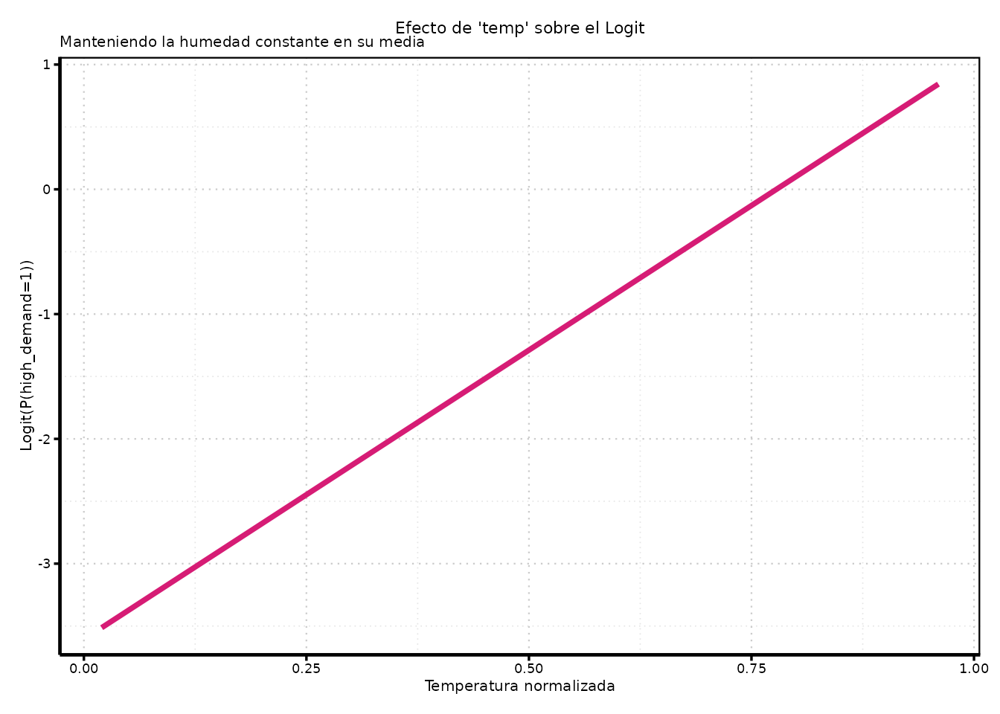

># Cargar y preparar los datos>source("../_shared/bikeshare.R")> course <-use_course_data("juventus")> bikedata <- course$data>># Ajustar modelo logístico> logit_model <-glm(high_demand ~ temp + hum, data = bikedata, family =binomial(link ="logit"))>summary(logit_model)
#>
#> Call:
#> glm(formula = high_demand ~ temp + hum, family = binomial(link = "logit"),
#> data = bikedata)
#>
#> Coefficients:
#> Estimate Std. Error z value Pr(>|z|)
#> (Intercept) -2.059 0.125 -16.400 <0.000 ***
#> temp 4.635 0.153 30.300 <0.000 ***
#> hum -2.404 0.143 -16.800 <0.000 ***
#> ---
#> Signif. codes: 0 '***' 0.001 '**' 0.010 '*' 0.050 '.' 0.100 ' ' 1
#>
#> (Dispersion parameter for binomial family taken to be 1)
#>
#> Null deviance: 9711.200 on 8644 degrees of freedom
#> Residual deviance: 8221.700 on 8642 degrees of freedom
#> AIC: 8228
#>
#> Number of Fisher Scoring iterations: 4
2. Efecto Lineal sobre el Logit
En la escala del logit, la relación es lineal y constante:
Cada coeficiente representa el cambio en el logit ante un aumento de una unidad en el predictor, manteniendo fijo el otro. Como temp y hum están normalizadas, conviene complementar esta escala con odds ratios y efectos sobre probabilidades.
Code
># Grilla para predicciones con hum promedio> newdata <-tibble(+temp =seq(min(bikedata$temp), max(bikedata$temp), length.out =100),+hum =mean(bikedata$hum)+ )>> newdata$logit_pred <-predict(logit_model, newdata = newdata, type ="link")>>ggplot(newdata, aes(x = temp, y = logit_pred)) ++geom_line(color = palette[["series-2"]], linewidth =1.3) ++labs(+title ="Efecto de 'temp' sobre el Logit",+subtitle ="Manteniendo la humedad constante en su media",+x ="Temperatura normalizada",+y ="Logit(P(high_demand=1))"+ ) ++theme_julia()

3. Efecto Multiplicativo sobre las Odds
Exponenciando los coeficientes obtenemos las odds ratios:
La tabla reporta \(e^{\beta}\): valores mayores que 1 multiplican las odds al alza y valores menores que 1 las reducen. Una unidad completa corresponde al recorrido total de cada predictor normalizado, por lo que también examinaremos cambios representativos.
En la escala de probabilidad, los efectos no son constantes:
Más fuertes cerca de \(p=0.5\).
Más débiles en los extremos (cerca de 0 o 1).
Code
># Curvas sigmoides para distintos niveles de hum> hum_values <-c(+quantile(bikedata$hum, 0.25, na.rm =TRUE),+mean(bikedata$hum, na.rm =TRUE),+quantile(bikedata$hum, 0.75, na.rm =TRUE)+ )> data_plot <-expand.grid(+temp =seq(min(bikedata$temp), max(bikedata$temp), length.out =100),+hum = hum_values+ )>> data_plot$prob_pred <-predict(logit_model, newdata = data_plot, type ="response")>>ggplot(data_plot, aes(x = temp, y = prob_pred, color =factor(hum))) ++geom_line(linewidth =1.2) ++labs(+title ="Efecto sobre la Probabilidad",+subtitle ="Curvas sigmoides para distintos niveles de humedad",+x ="Temperatura normalizada",+y ="Probabilidad de demanda alta",+color ="Humedad normalizada"+ ) ++theme_julia()
5. Efectos Marginales
En los modelos logísticos, los coeficientes (β) no se interpretan directamente en términos de probabilidades, sino en la escala del logit. Para facilitar la interpretación, usamos efectos marginales, que traducen esos coeficientes en cambios en la probabilidad de ocurrencia del evento (aquí, tener demanda alta).
Los efectos marginales muestran cómo varía la probabilidad de éxito (high_demand = 1) frente a un cambio pequeño en una variable explicativa, manteniendo las demás constantes.
Existen tres maneras habituales de calcularlos:
AME (Average Marginal Effects): promedio de los efectos marginales individuales en toda la muestra. Responde a: “en promedio, ¿cómo cambia la probabilidad si todos aumentaran en una unidad su predictor?”
MEM (Marginal Effects at the Mean): evalúa los efectos marginales en el individuo promedio, es decir, tomando los valores medios de los predictores.
MER (Marginal Effects at Representative Values): muestra los efectos en casos concretos, definidos por combinaciones específicas de las variables.
Interpretación: la columna estimate expresa el cambio promedio en probabilidad ante una unidad adicional del predictor. El signo indica la dirección y el intervalo de confianza cuantifica la incertidumbre.
👉 El AME ofrece una visión global, útil cuando queremos un resumen simple del efecto promedio.
MEM
Code
> vm <-expand.grid(temp =mean(bikedata$temp,na.rm=T), hum =mean(bikedata$hum,na.rm=T))> mem <-slopes(logit_model, newdata = vm) %>%+select(term, estimate, std.error, conf.low, conf.high, p.value) >>bind_cols(vm, mem)
La tabla evalúa ambos efectos en una hora hipotética con temperatura y humedad medias.
El MEM es intuitivo porque se interpreta en un caso concreto. Sin embargo, puede ser engañoso si la combinación promedio de covariables no representa una hora realmente observada.
Los cuatro escenarios cruzan los cuartiles 25 y 75 de temperatura y humedad. Así podemos comparar el mismo cambio bajo condiciones frescas/cálidas y secas/húmedas sin extrapolar fuera del soporte observado.
👉 El MER es útil porque permite explorar cómo cambian los efectos en situaciones representativas o extremas, mostrando la heterogeneidad de los efectos.
6. Conclusión
En la escala logit, los efectos son lineales y fáciles de calcular, pero difíciles de interpretar.
En la escala de odds, se interpretan como multiplicadores, lo cual es más informativo que el logit, pero aún abstracto.
En la escala de probabilidad, los efectos no son constantes: dependen del nivel de las covariables. Por eso es necesario mirar AME, MEM y MER para obtener una imagen completa.
Cada medida responde a una pregunta distinta:
AME: visión promedio global.
MEM: visión puntual en el “individuo promedio”.
MER: visión contextualizada en escenarios concretos.
En resumen, no existe una única interpretación de los efectos marginales. La escala (logit, odds, probabilidad) y el escenario (promedio, promedio de covariables, o casos representativos) condicionan la lectura. Entender estas diferencias es clave para comunicar correctamente los resultados.